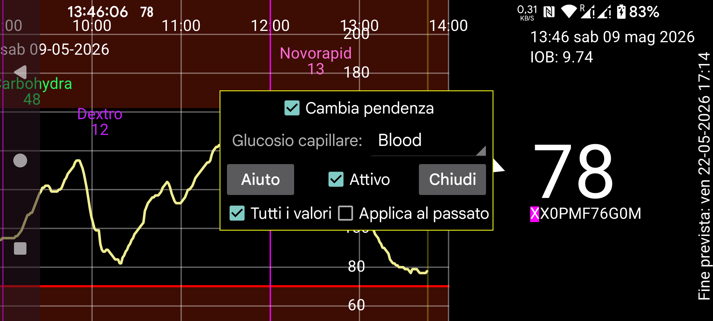

ar de es hi it ja nl ru uk uz en
Juggluco 10.0.0 e versioni successive hanno la possibilità di calibrare i sensori.
Glicemia: Specifica quale etichetta rappresenta le misurazioni della glicemia da puntura del dito. Successivamente, tutti i valori della glicemia inseriti sotto quell'etichetta saranno usati per la calibrazione, ad eccezione dei valori del glucosio inseriti con "Escludi" selezionato (in menu centrale sinistro→Nuovo valore). Quando la velocità di variazione assoluta è troppo grande, la misurazione della glicemia da puntura del dito viene automaticamente esclusa.
Dovresti escludere solo i valori del glucosio che non sono appropriati per la calibrazione perché il livello di glucosio non è stabile. Tutti gli altri valori dovrebbero essere lasciati, anche quando pensi che il sensore non abbia bisogno di calibrazione. Quando non vuoi calibrare, deseleziona "Attivo" e nel menu centrale destro deseleziona i ✓ prima di Flusso, Scansioni e Cronologia e imposta le [x] dopo di essi. In questo modo, tutti i valori del glucosio appropriati vengono usati per la calibrazione, non solo quelli che non concordano.
Ogni nuova puntura del dito non esclusa fornisce una nuova calibrazione. Puoi visualizzare le calibrazioni effettuate premendo "Calibrazioni" nella schermata delle informazioni sul sensore. Puoi arrivare alle informazioni sul sensore tenendo premuta a lungo la curva del glucosio o sotto menu sinistro→Sensore. (Le calibrazioni sono specifiche di un particolare sensore.)
Se "Applica al passato" non è impostato, i valori del glucosio vengono calibrati con l'ultima calibrazione prima del valore del glucosio. Se "Applica al passato" è impostato, l'ultima calibrazione viene applicata a tutti i valori del glucosio di questo sensore.
Cambia pendenza:
Se "Cambia pendenza" non è impostato, viene solo aggiunto o sottratto un certo valore da ogni valore del glucosio del sensore per ottenere il valore del glucosio calibrato. La relazione tra valore calibrato e valore del sensore è:
Glucosio calibrato = GlucosioSensore + b
Il valore di b è determinato dalla calibrazione. Se usi questa impostazione, non dovresti calibrare usando valori del glucosio elevati perché il valore di b dedotto sarebbe troppo grande per valori del glucosio piccoli. Calibrare valori alti non ha nemmeno molto senso, perché la differenza tra alto e molto alto non è così importante.
Se "Cambia pendenza" è impostato la relazione diventa:
Glucosio calibrato = a × GlucosioSensore + b
In cui a può essere diverso da 1. Avere una gamma diversa di calibrazioni è importante. Ad esempio, se tutte le misurazioni della glicemia fossero state effettuate quando il glucosio era intorno a 90 mg/dL (5 mmol/L) e i valori del sensore fossero distribuiti da 54 mg/dL a 180 mg/dL (da 3 mmol/L a 10 mmol/L) questi valori non sarebbero abbastanza diversi per dedurre il valore di a.
Juggluco pondera le misurazioni del glucosio in base a quanto sono vecchie. Il valore corrente del glucosio ha peso=1, i valori del glucosio più vecchi hanno un peso minore. Anche la calibrazione stessa è ponderata in modo che le calibrazioni più vecchie abbiano meno influenza: nel tempo, a converge a 1 e b a 0.
Il peso totale delle misurazioni della glicemia utilizzate determina quanto peso viene dato alla calibrazione. Con più misurazioni (recenti) della glicemia, i valori del glucosio calibrati sono inclinati di più verso il miglior adattamento dedotto tra glicemia e glucosio CGM da queste misurazioni.
I valori della cronologia sono disponibili solo per il passato, quindi al momento in cui viene effettuata una misurazione da puntura del dito non c'è alcun valore della cronologia corrispondente. La calibrazione dei valori è programmata per essere eseguita 21 minuti dopo per Libre, e 31 minuti dopo per i sensori CareSens Air, ma spesso accade più tardi. Inoltre, la calibrazione del flusso viene ripetuta in un momento successivo in modo che possa essere usato il prossimo CGM.
Attivo:
Quando attivo è impostato, i valori del glucosio calibrati vengono usati per allarmi, broadcast, Health Connect, webserver Nightscout/xDrip in Juggluco, valori del glucosio inviati agli orologi e glucosio flottante. Sul lato destro di Juggluco il valore calibrato viene mostrato in caratteri grandi con il valore non calibrato dopo di esso in caratteri piccoli. Non viene mai usato per l'invio a Libreview.
Attiva e disattiva la curva calibrata usando ✓/- prima di "Flusso" e "Cronologia" nel menu centrale destro. Attiva e disattiva la curva grezza usando la casella di controllo dopo "Flusso" e "Cronologia".
Tutti i valori: Per certi valori non c'è un valore calibrato. La curva dei valori calibrati non mostrerà nulla, se "Tutti i valori" non è selezionato. Se "Tutti i valori" è selezionato, mostrerà il valore non calibrato. In questo modo puoi disattivare i valori grezzi in menu centrale destro→Flusso e vedere comunque tutti i valori.